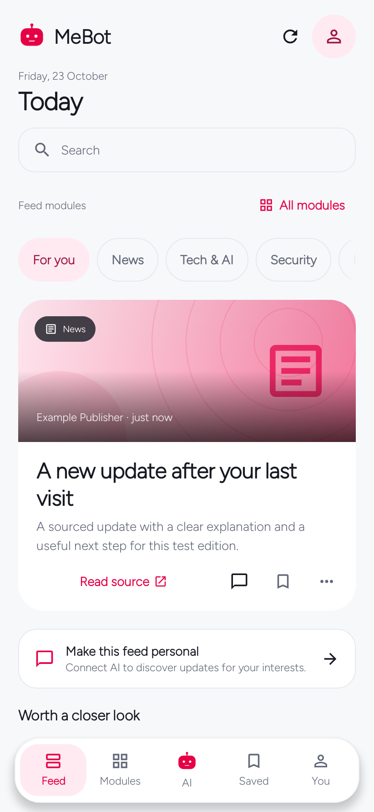

Native Android Version 0.6.1
MeBot for Android
Read updates from the modules you choose. Open a story for an AI explanation, ask a follow-up, and keep useful finds.
Android 8.0+ · English & Kiswahili · Open source
Start with your ChatGPT plan
Connect an eligible Plus or Pro account through the official sign-in flow. You approve AI use separately; your ChatGPT conversations and memory are not imported.
Connection options and limits
How these screens were captured
First launch
Three things to make it yours
The welcome tour is skippable. You can connect and personalize later from You.
- 01
Connect AI
Use your eligible ChatGPT plan, a separately billed OpenAI API key, or a personal service you operate.
Choose a connection → - 02
Review your context
Import a small JSON file or add a few notes. Choose which modules may use each interest, goal, or preference.
Prepare your context → - 03
Choose your modules
Start with the topics you need. Each module has a default focus and its own preferences.
Explore the catalog →

Read, then explore
A useful next step from every story
The feed opens with five stories. A connected AI can start explaining one as you open it, then answer your follow-up with the story and relevant approved context.
- Source links stay visible alongside summaries and media.
- Search across enabled factual modules without replacing your feed.
- Save a find, ask a question, or load more cached stories.
A modular feed
Choose the topics.
Keep the order.
Search the full catalog, filter enabled or disabled modules, and drag your choices into the order you want on Feed. Add a Watchlist for a topic of your own.

Alarms are one part of MeBot.
Explore everyday tools →Choose a bundled tone or your own audio, add an optional spoken wake-up message, and use a math or QR challenge. Focus, daily check-in, and history also work without AI.